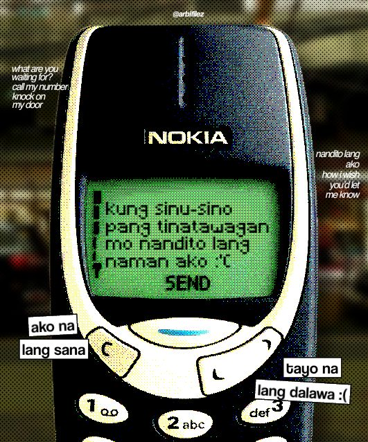

Nokia 3310 & Friendster
Social Domain
SMS CLANS & OFWS
The Texting Capital to 5G Feeds
Evolution from 160-character SMS clans and early OFW video calls to instant global feeds.
2000–2010 Decade
Nokia 3310 keypad texting, SMS clans, Friendster testimonials, and Yahoo Messenger video calls for OFW families.
Present Time
5G mobile smartphones, TikTok algorithms, Instagram Reels, Messenger, and live-streaming online communities.
Impact:
Birthed the hyper-connected Pinoy netizen